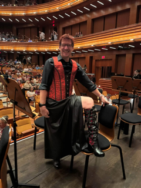
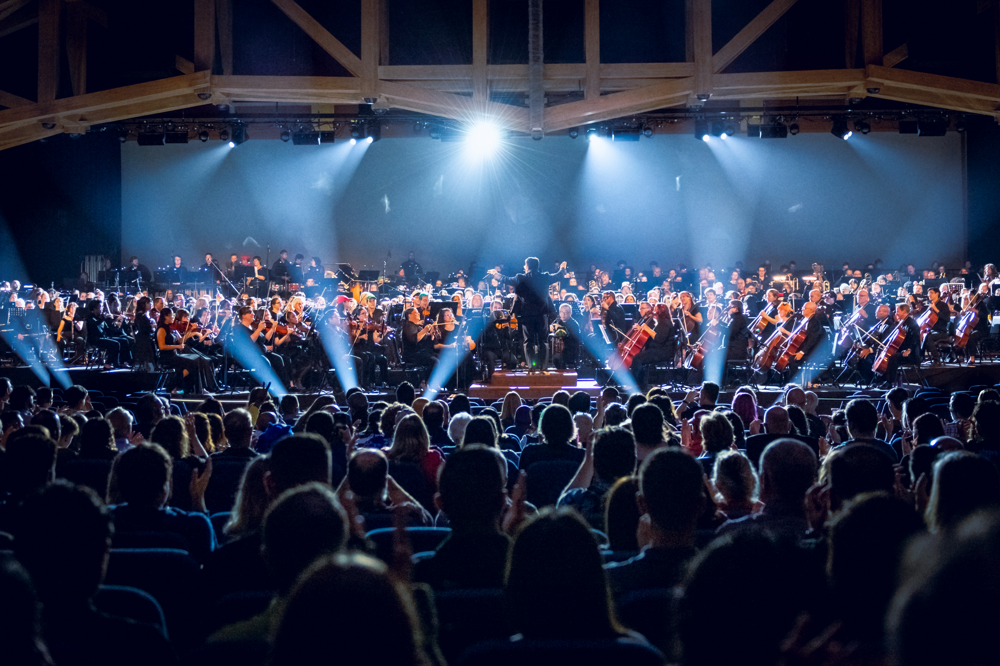

Finding His Way Back to Music

David Mote's connection to music began when he was nine years old. With a sister who played piano and clarinet, he wanted to try something different, and the violin caught his interest. He quickly grew comfortable with the instrument and became involved in his school's orchestra in Ohio, where he benefited from a strong strings program and excellent teachers. Playing music came naturally to him, and performing in school concerts became an important part of his life.
After moving from Ohio to Baltimore, David found it difficult to locate a strings program or violin teacher that would allow him to continue. Eventually, he stepped away from playing. He missed the violin, and leaving it behind was difficult, but the change also gave him an opportunity to explore interests outside of music. More than 30 years passed before he found his way back to the instrument.
In 2017, a friend invited David to attend a CFCArts orchestra concert. He enjoyed the performance and later learned that the community orchestra welcomed musicians with different levels of experience. Encouraged by his partner, he decided to join. Picking up the violin again felt surprisingly familiar. His fingers seemed to remember where to go, and reading music and counting notes came back to him. At the same time, returning was challenging because he expected himself to play at the level he remembered. It was both a natural return and a new beginning.
One of David's most meaningful experiences was performing in the first Classic(al) Rock concert at Steinmetz Hall at the Dr. Phillips Center on November 19, 2022. It was the first concert he played with Arrington, and the first time since returning to music that he felt confident enough to simply enjoy playing. Being part of CFCArts has also given him a close-knit community, lasting friendships, and the chance to share the excitement of making music as part of an ensemble.

Outside of music, David enjoys running and cycling. Both activities challenge him, encourage personal growth, and give him a sense of accomplishment when he reaches a goal or finishes a race. He especially enjoys participating in events that support meaningful causes. His advice to anyone thinking about returning to an old passion or trying something new later in life is simple: "Do it!" He still regrets stopping violin in high school, but is grateful he found his way back. As David puts it, he will probably stay in the orchestra until he cannot play anymore—or he's dead.